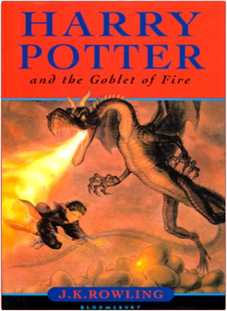
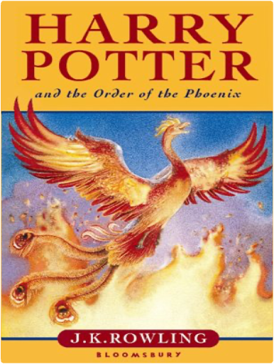
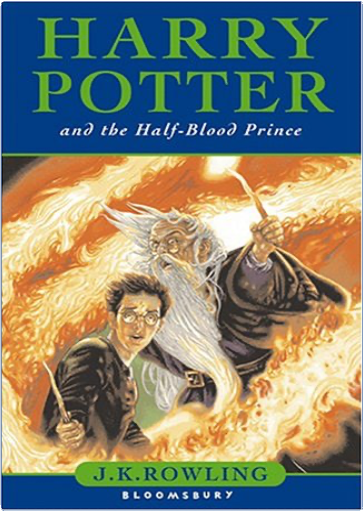
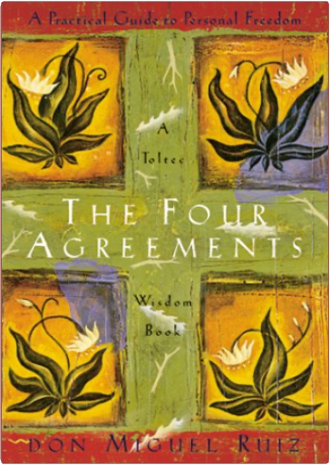

harry potter, tome 3 : harry potter and the prisoner of azkabanj. k. rowling The worry, when faced with the follow-up to books as good as Harry Potter and the Philosopher's Stone and Harry Potter and the Chamber of Secrets (both winners of the Nestlé Smarties Prize Gold Award), is that it won't be as good. With J.K. Rowling's Harry Potter and the Prisoner of Azkaban any concerns are banished from page one. This, the third in the series, continues where the previous two left off and is a fantastic adventure of mystery, magic and mayhem combined with liberal doses of humour and plenty of suspense.
Forced to do his homework in the dead of night and forbidden to refer to his magic skills or his life at Hogwarts school, Harry Potter is forced to endure the summer holidays with the dreaded Dursleys. The arrival of Aunt Marge is the final straw and, in a fit of anger, Harry breaks all the rules and casts a spell on her, causing her to blow up like a balloon. Running away from his dreaded relatives, Harry expects to be expelled from Hogwarts for his blatant flaunting of the rule not to use magic outside term time. However, the arrival of the mysterious Knight Bus and a meeting with Cornelius Fudge, the Minister of Magic, result in Harry enjoying the rest of the holidays in the wonderful surroundings of the Leaky Cauldron.
The escape of Sirius Black—one time friend of Harry's parents, implicated in their murder and follower of "You- Know-Who"—from Azkaban, has serious implications for Harry for it would appear that Black is bent on revenge against Harry for thwarting "You-Know-Who". Back at Hogwarts, Harry's movements are restricted by the presence of the Dementors—guards from Azkaban on the look out for Black—however, this doesn't stop him throwing himself into the new Quidditch season and going about his normal business—or at least attempting to. Despite warnings Harry is determined to get to the bottom of the mystery surrounding Sirius Black—how could this one-time close friend of his parents become the cause of their deaths?
And why does the presence of the Dementors have such a devastating effect on him, causing him to hear the last moments of his mother's life?
With another four Harry Potter novels planned, Jo Rowling is creating a series of books which will become classics to rival C.S. Lewis'Chronicles of Narnia—books written for children but loved by adults too. (Ages 9 and up) —Philippa Reece  harry potter, tome 4 : harry potter and the goblet of firej. k. rowling Harry Potter and the Goblet of Fire audio book Part 2 follows on from Part 1 where Harry begins his fourth year at Hogwarts School of Witchcraft and Wizardry. The complete story is also available on audio in 14 cassettes.
Harry Potter and the Goblet of Fire is the long-awaited, heavily hyped fourth instalment of a phenomenally successful series that has captured the imagination of millions of readers, young and old, across the globe. For J K Rowling the pressure is certainly on to continue to come up with thrilling, pacey storylines that allow her hero to mature into a young man without detracting from the magical secret that has made Harry into a superstar. In this book, the teenage Harry has a certain gawky charm that fits well with his advancing adolescence. As the story moves on, Harry too moves on to a new level of maturity that leaves the reader wondering how he will learn from his experiences, and liking him all the more as a character.
Once returned to Hogwarts after his summer holiday with the dreadful Dursleys and an extraordinary outing to the Quidditch World Cup, the 14-year-old Harry and his fellow pupils are enraptured by the promise of the Triwizard Tournament: an ancient, ritualistic tournament that brings Hogwarts together with two other schools of wizardry—Durmstrang and Beauxbatons—in heated competition. But when Harry's name is pulled from the Goblet of Fire, and he is chosen to champion Hogwarts in the tournament, the trouble really begins. Still reeling from the effects of a terrifying nightmare that has left him shaken, and with the lightning-shaped scar on his head throbbing with pain (a sure sign that the evil Voldemort, Harry's sworn enemy, is close), Harry becomes at once the most popular boy in school. Yet, despite his fame, he is totally unprepared for the furore that follows.
This is a hefty volume: 636 pages, of which probably at least 200 could have been cut without detracting from the story. The weight and complexity of the book is perhaps a hint that Rowling now has her eye sharply focused on her adult audience, and the average child-reader (particularly one who is coming to Harry Potter for the first time) may well find its girth daunting. Rowling's ironic and pointed observations on tabloid journalism and the nature of media hype is just one of the references littered through the book that will tickle the grown-ups but may well fly over the heads of her young fans.
However, after a slow start, Harry Potter and the Goblet of Fire really starts to sparkle halfway through with Rowling's familiar magic (and yes, there is a death—sudden and tragic—and yes, Harry does start to notice girls). The crux of this story, however, is Harry's gradual coming-of-age and his handling of the increasingly determined threats to his own life.
This book is pivotal, not just for the author for whom the heat is well and truly on, but for Harry and his readers who, by the last chapter, are left in little doubt that there is much more to come. (Ages 10 to adult) —Susan Harrison  harry potter, tome 5 : harry potter and the order of the phoenixj. k. rowling Le prix éditeur est le prix de vente conseillé au Royaume-Uni.
Harry Potter est de retour ! Il a 15 ans et les rumeurs les plus folles circulent sur ce nouveau chapitre de ses aventures. Tout ce que l'on sait avec certitude, c'est que le tome 5 sera plus long que le tome 4, et fera 768 pages. Vous pouvez déjà commander la version française qui paraîtra le 3 décembre ! Pour tout savoir, rendez-vous dans la boutique Harry Potter.  harry potter, tome 6 : harry potter and the half-blood princej. k. rowling Harry Potter and the Half-Blood Prince, the sixth book in J.K. Rowling’s bestselling series, picks up shortly after we left Harry at the end of The Order of the Phoenix. Lord Voldemort is acting out in the open, continuing his reign of terror which was temporarily stopped almost 15 years beforehand. Harry is again at the Dursleys, where the events of the previous month continue to weigh on his mind, although not as much as the impending visit from his Headmaster, Albus Dumbledore. Given their last meeting, Harry is understandably confused as to why the old wizard would want to visit him at home.
Rowling opens with a chapter she had wanted to use for the first book, of The Philosopher’s Stone—Lord Voldemort has been creating chaos in the Wizard and Muggle communities alike, the war is in full swing and the Wizarding community now lives in fear. The press have been questioning the events at the Ministry which led to the admission of Voldemort’s return, and of course Harry’s name is mentioned a number of times. Harry’s got his problems, but his anxiety is nothing compared to Hermione’s when the OWL results are delivered. There’s a new Defence Against The Dark Arts teacher, an assortment of new characters and creatures, and startling revelations about past characters and events.
Gone is the rage-filled Harry of The Order of the Phoenix—he’s not being kept in the dark any more, his unjustified Quidditch ban has been lifted and he has matured considerably in his short time out of school. Half-Blood Prince follows Harry into the world of late-teens, and his realisation that nobody is infallible has made his growth that much easier. Accepting his destiny, Harry continues to behave as teenagers do, enjoying his time with his friends, developing his relationships outside of his usual circle, and learning more about how he must, eventually, do what he is destined to do.
J.K. Rowling delivers another fantastic tale which will have the readers gasping for more, capturing the characters perfectly and continuing a tale which readers will enjoy over and over again. —Ziggy Morbi harry potter, tome 7 : harry potter and the deathly hallowsj. k. rowling The Final Chapter
Harry has been burdened with a dark, dangerous and seemingly impossible task: that of locating and destroying Voldemort's remaining Horcruxes. Never has Harry felt so alone, or faced a future so full of shadows. But Harry must somehow find within himself the strength to complete the task he has been given. He must leave the warmth, safety and companionship of The Burrow and follow without fear or hesitation the inexorable path laid out for him.
In this final, seventh installment of the Harry Potter series, J.K. Rowling unveils in spectactular fashion the answers to the many questions that have been so eagerly awaited. The spellbinding, richly woven narrative, which plunges, twists and turns at a breathtaking pace, confirms the author as a mistress of storytelling, whose books will be read, reread and read again.
Visit the Harry Potter Store
Our Harry Potter Store features all things Harry, including books, audio CDs and cassettes, DVDs, toys and more.
Begin at the Beginning
Harry Potter and the Philosopher's Stone
Hardcover
Paperback Harry Potter and the Chamber of Secrets
Hardcover
Paperback Harry Potter and the Prisoner of Azkaban
Hardcover
Paperback Harry Potter and the Goblet of Fire
Hardcover
Paperback Harry Potter and the Order of the Phoenix
Hardcover
Paperback Harry Potter and the Half-Blood Prince
Hardcover
Paperback
Why We Love Harry
Favourite Moments from the Series
There are plenty of reasons to love Rowling's wildly popular series—no doubt you have several dozen of your own. Our list features favourite moments, characters, and artefacts from the first six books. Keep in mind that this list is by no means exhaustive (what we love about Harry could fill ten books!) and does not include any of the spectacular revelatory moments that would spoil the books for those (few) who have not read them. Enjoy.
Harry Potter and the Philosopher's Stone
* Harry's first trip to the zoo with the Dursleys, when a boa constrictor winks at him.
* When the Dursleys' house is suddenly besieged by letters for Harry from Hogwarts. Readers learn how much the Dursleys have been keeping from Harry. Rowling does a wonderful job in displaying the lengths to which Uncle Vernon will go to deny that magic exists.
* Harry's first visit to Diagon Alley with Hagrid. Full of curiosities and rich with magic and marvel, Harry's first trip includes a trip to Gringotts and Ollivanders, where Harry gets his wand (holly and phoenix feather) and discovers yet another connection to He-Who-Must-No-Be-Named. This moment is the reader's first full introduction to Rowling's world of witchcraft and wizards.
* Harry's experience with the Sorting Hat.
Harry Potter and the Chamber of Secrets
* The de-gnoming of the Weasleys' garden. Harry discovers that even wizards have chores—gnomes must be grabbed (ignoring angry protests "Gerroff me! Gerroff me!"), swung about (to make them too dizzy to come back), and tossed out of the garden—this delightful scene highlights Rowling's clever and witty genius.
* Harry's first experience with a Howler, sent to Ron by his mother.
* The Duelling Club battle between Harry and Malfoy. Gilderoy Lockhart starts the Duelling Club to help students practice spells on each other, but he is not prepared for the intensity of the animosity between Harry and Draco. Since they are still young, their minibattle is innocent enough, including tickling and dancing charms.
Harry Potter and the Prisoner of Azkaban
* Ron's attempt to use a telephone to call Harry at the Dursleys'.
* Harry's first encounter with a Dementor on the train (and just about any other encounter with Dementors). Harry's brush with the Dementors is terrifying and prepares Potter fans for a darker, scarier book.
* Harry, Ron, and Hermione's behaviour in Professor Trelawney's Divination class. Some of the best moments in Rowling's books occur when she reminds us that the wizards-in-training at Hogwarts are, after all, just children. Clearly, even at a school of witchcraft and wizardry, classes can be boring and seem pointless to children.
* The Boggart lesson in Professor Lupin's classroom.
* Harry, Ron, and Hermione's knock-down confrontation with Snape.
Harry Potter and the Goblet of Fire
* Hermione's disgust at the reception for the veela (Bulgarian National Team Mascots) at the Quidditch World Cup. Rowling's fourth book addresses issues about growing up—the dynamic between the boys and girls at Hogwarts starts to change. Nowhere is this more plain than the hilarious scene in which magical cheerleaders nearly convince Harry and Ron to jump from the stands to impress them.
* Viktor Krum's crush on Hermione—and Ron's objection to it.
* Malfoy's "Potter Stinks" badge.
* Hermione's creation of S.P.E.W., the intolerant bigotry of the Death Eaters, and the danger of the Triwizard Tournament. Add in the changing dynamics between girls and boys at Hogwarts, and suddenly Rowling's fourth book has a weight and seriousness not as present in early books in the series. Candy and tickle spells are left behind as the students tackle darker, more serious issues and take on larger responsibilities, including the knowledge of illegal curses.
Harry Potter and the Order of the Phoenix
* Harry's outburst to his friends at No. 12 Grimmauld Place. A combination of frustration over being kept in the dark and fear that he will be expelled fuels much of Harry's anger, and it all comes out at once, directly aimed at Ron and Hermione. Rowling perfectly portrays Harry's frustration at being too old to shirk responsibility, but too young to be accepted as part of the fight that he knows is coming.
* Harry's detention with Professor Umbridge. Rowling shows her darker side, leading readers to believe that Hogwarts is no longer a safe haven for young wizards. Dolores represents a bureaucratic tyrant capable of real evil, and Harry is forced to endure their private battle of wills alone.
* Harry and Cho's painfully awkward interactions. Rowling clearly remembers what it was like to be a teenager.
* Harry's Occlumency lessons with Snape.
* Dumbledore's confession to Harry.
Harry Potter and the Half-Blood Prince
* This book is much darker than the rest. Lord Voldemort has been creating chaos in the Wizard and Muggle communities alike, the war is in full swing and the Wizarding community now lives in fear.
* It is much more emotional. The story turns at the whim of a temperamental teenager from war and life-changing tragedy, to euphoria and glistening happiness.
Magic, Mystery, and Mayhem: A Conversation with J.K. Rowling
"I am an extraordinarily lucky person, doing what I love best in the world. I’m sure that I will always be a writer. It was wonderful enough just to be published. The greatest reward is the enthusiasm of the readers." —J.K. Rowling
Find out more about Harry's creator in our exclusive interview with J.K. Rowling.
Did You Know? The Little White Horse was J.K. Rowling's favourite book as a child. </ a> Jane Austen is Rowling's favourite author. Roddy Doyle is Rowling's favourite living writer. |  the four agreements: a practical guide to personal freedomdon miguel ruiz Sit at the foot of a native elder and listen as great wisdom of days long past is passed down. In The Four Agreements shamanic teacher and healer Don Miguel Ruiz exposes self-limiting beliefs and presents a simple yet effective code of personal conduct learned from his Toltec ancestors. Full of grace and simple truth, this handsomely designed book makes a lovely gift for anyone making an elementary change in life, and it reads in a voice that you would expect from an indigenous shaman. The four agreements are these: Be impeccable with your word. Don't take anything personally. Don't make assumptions. Always do your best. It's the how and why one should do these things that make The Four Agreements worth reading and remembering. —P. Randall Cohan le petit princeantoine de saint-exupéry Imaginez-vous perdu dans le désert, loin de tout lieu habité, et face à un petit garçon tout blond, surgi de nulle part. Si de surcroît ce petit garçon vous demande avec insistance de dessiner un mouton, vous voilà plus qu'étonné ! À partir de là, vous n'aurez plus qu'une seule interrogation : savoir d'où vient cet étrange petit bonhomme et connaître son histoire.
S'ouvre alors un monde étrange et poétique, peuplé de métaphores, décrit à travers les paroles d'un "petit prince" qui porte aussi sur notre monde à nous un regard tout neuf, empli de naïveté, de fraîcheur et de gravité. Très vite, vous découvrez d'étranges planètes, peuplées d'hommes d'affaires, de buveurs, de vaniteux, d'allumeurs de réverbères.
Cette évocation onirique, à laquelle participent les aquarelles de l'auteur, a tout d'un parcours initiatique, où l'enfant apprendra les richesses essentielles des rapports humains et le secret qui les régit : "On ne voit bien qu'avec le coeur, l'essentiel est invisible pour les yeux."
Oeuvre essentielle de la littérature, ce livre de Saint-Exupéry est un ouvrage que l'on aura à coeur de raconter à son enfant, page après page, histoire aussi de redécouvrir l'enfant que l'on était autrefois, avant de devenir une grande personne ! —Xavier Marciniak le petit princeantoine de saint-exupéry Imaginez-vous perdu dans le désert, loin de tout lieu habité, et face à un petit garçon tout blond, surgi de nulle part. Si de surcroît ce petit garçon vous demande avec insistance de dessiner un mouton, vous voilà plus qu'étonné ! À partir de là, vous n'aurez plus qu'une seule interrogation : savoir d'où vient cet étrange petit bonhomme et connaître son histoire.
S'ouvre alors un monde étrange et poétique, peuplé de métaphores, décrit à travers les paroles d'un "petit prince" qui porte aussi sur notre monde à nous un regard tout neuf, empli de naïveté, de fraîcheur et de gravité. Très vite, vous découvrez d'étranges planètes, peuplées d'hommes d'affaires, de buveurs, de vaniteux, d'allumeurs de réverbères.
Cette évocation onirique, à laquelle participent les aquarelles de l'auteur, a tout d'un parcours initiatique, où l'enfant apprendra les richesses essentielles des rapports humains et le secret qui les régit : "On ne voit bien qu'avec le coeur, l'essentiel est invisible pour les yeux."
Oeuvre essentielle de la littérature, ce livre de Saint-Exupéry est un ouvrage que l'on aura à coeur de raconter à son enfant, page après page, histoire aussi de redécouvrir l'enfant que l'on était autrefois, avant de devenir une grande personne ! —Xavier Marciniak |


 Made with Delicious Library
Made with Delicious Library